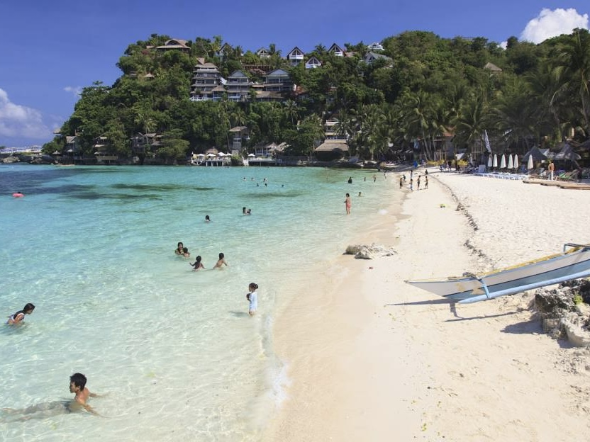
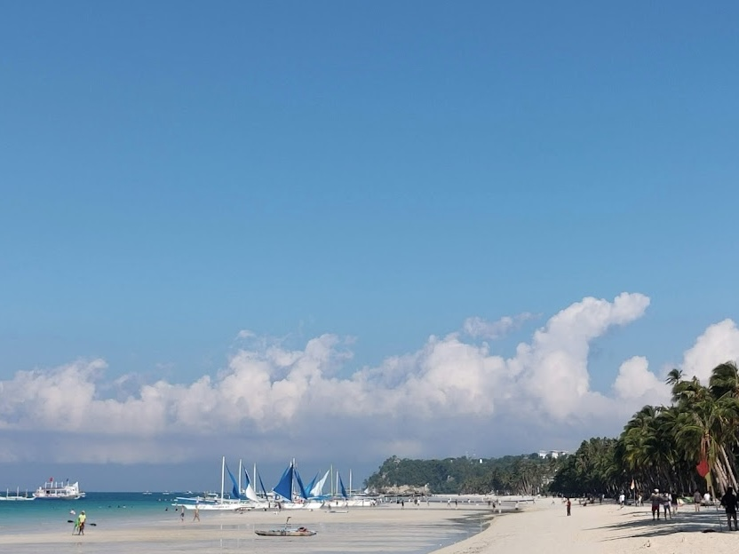
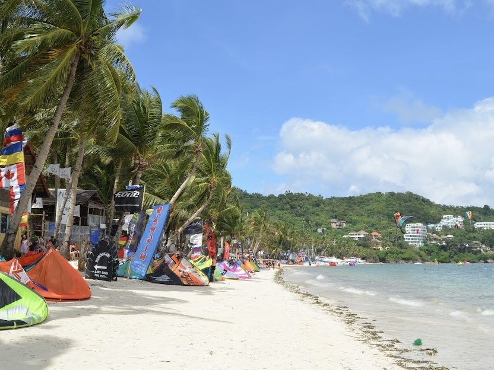
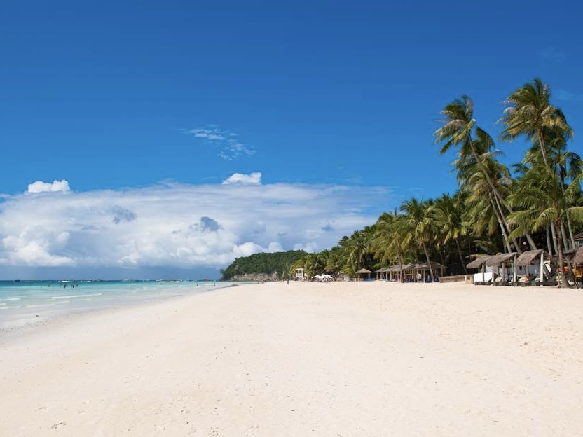
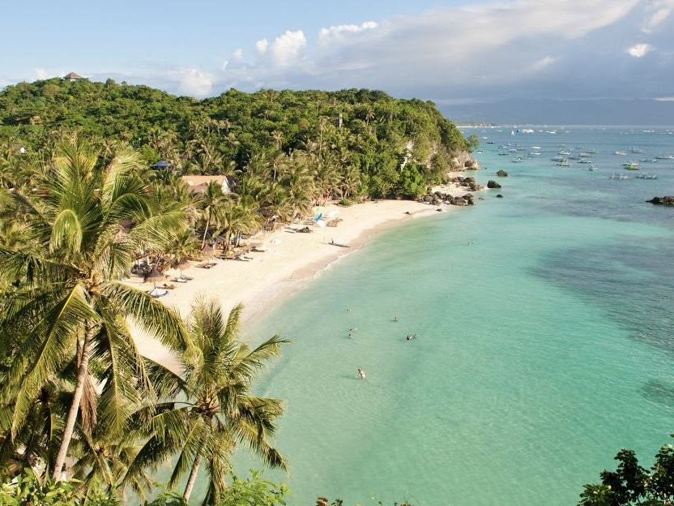
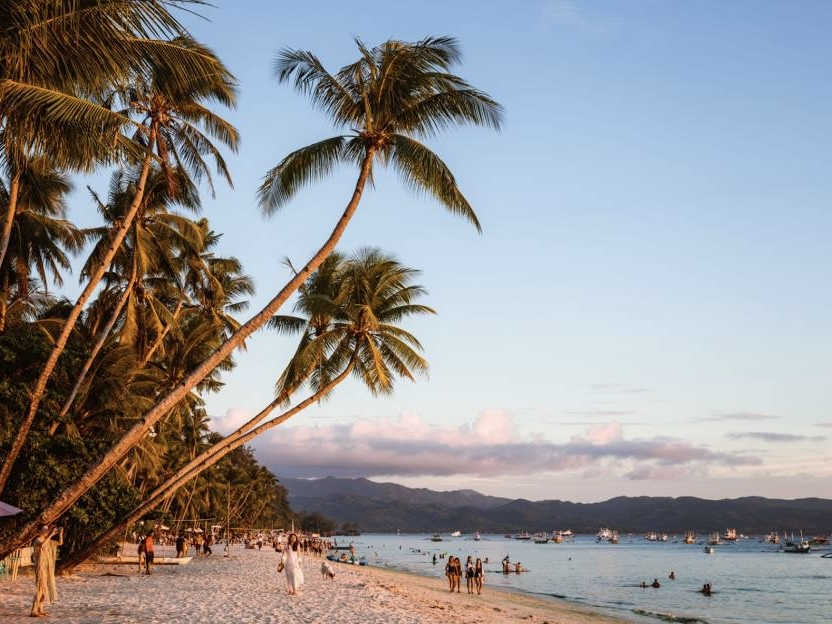
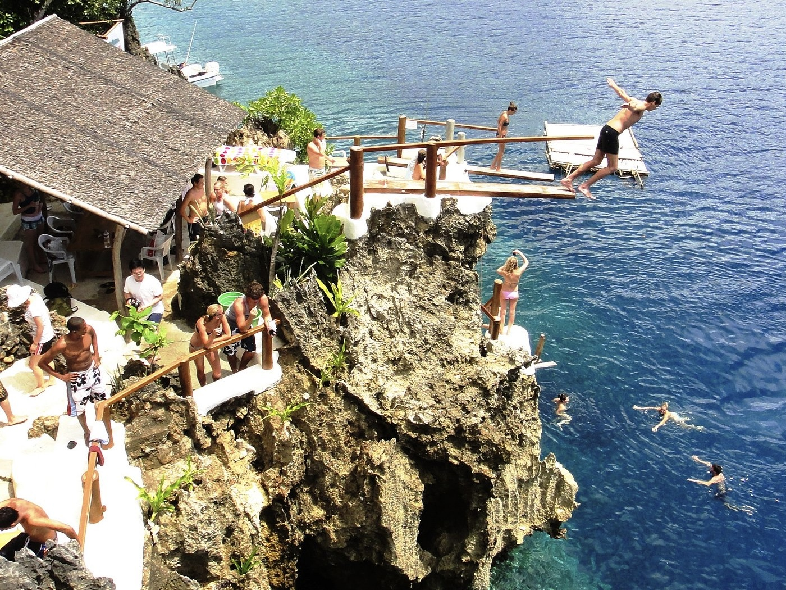

Boracay
| Located | Famous For | Travel Hours From Manila | Activities |
|---|---|---|---|
| Boracay Island, Aklan, Philippines | Known for its stunning white beaches, particularly White Beach, and vibrant nightlife. | About 1 hour by plane. | Swimming, beach lounging, water sports, and nightlife experiences. |








| Travel Tips |
|---|
|
Best Time to Visit The ideal time to visit Boracay is during the dry season from November to April. This period offers clear skies and excellent beach conditions for swimming and sunbathing. |
|
How to Get There Fly to either Caticlan or Kalibo Airport from Manila or Cebu. Caticlan is closer to the island and is about a 15-minute boat ride to Boracay. |
|
Where to Stay Boracay has a wide range of accommodations, from budget hostels to luxury resorts. Station 1 is known for upscale hotels, while Station 2 is more vibrant with nightlife and dining options. |
|
Pack Light, Pack Smart Bring lightweight clothing, swimwear, and flip-flops for beach activities. Don’t forget essentials like sunscreen, a hat, and sunglasses to protect against the sun. |
|
Enjoy Water Sports Boracay is famous for its water sports. Try parasailing, jet skiing, or paddleboarding for an adrenaline rush. |